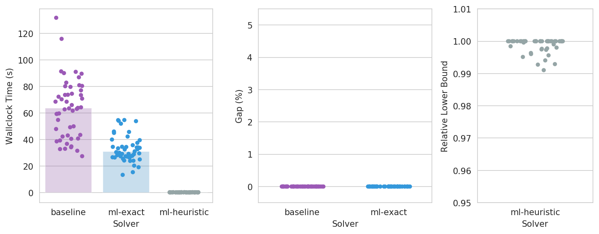
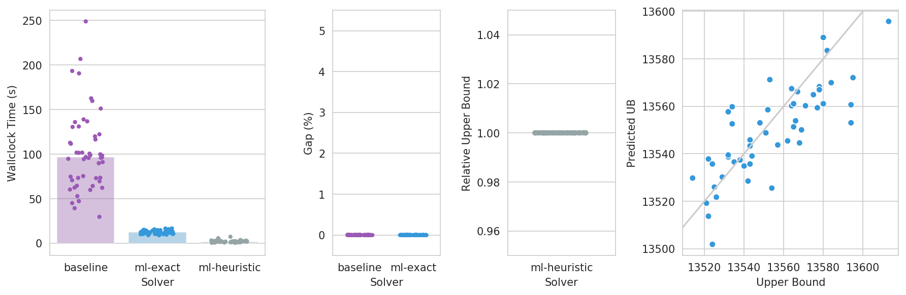
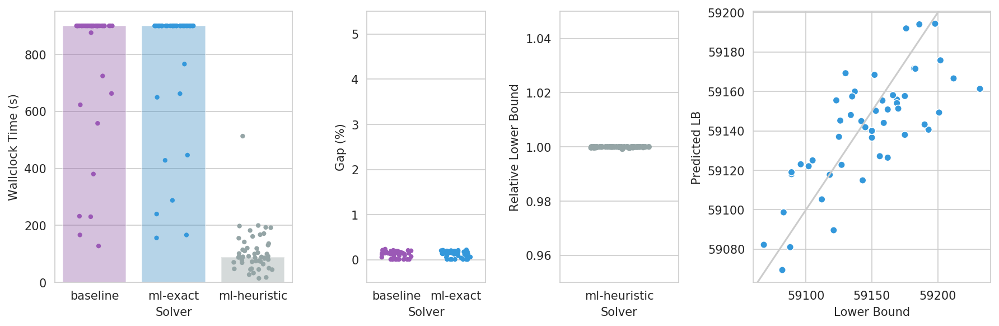

Benchmark Problems, Challenges and Results
MIPLearn provides a selection of benchmark problems and random instance generators, covering applications from different fields, that can be used to evaluate new learning-enhanced MIP techniques in a measurable and reproducible way. In this page, we describe these problems, the included instance generators, and we present some benchmark results for LearningSolver with default parameters.
Preliminaries
Benchmark challenges
When evaluating the performance of a conventional MIP solver, benchmark sets, such as MIPLIB and TSPLIB, are typically used. The performance of newly proposed solvers or solution techniques are typically measured as the average (or total) running time the solver takes to solve the entire benchmark set. For Learning-Enhanced MIP solvers, it is also necessary to specify what instances should the solver be trained on (the training instances) before solving the actual set of instances we are interested in (the test instances). If the training instances are very similar to the test instances, we would expect a Learning-Enhanced Solver to present stronger perfomance benefits.
In MIPLearn, each optimization problem comes with a set of benchmark challenges, which specify how should the training and test instances be generated. The first challenges are typically easier, in the sense that training and test instances are very similar. Later challenges gradually make the sets more distinct, and therefore harder to learn from.
Baseline results
To illustrate the performance of LearningSolver, and to set a baseline for newly proposed techniques, we present in this page, for each benchmark challenge, a small set of computational results measuring the solution speed of the solver and the solution quality with default parameters. For more detailed computational studies, see references. We compare three solvers:
- baseline: Gurobi 9.0 with default settings (a conventional state-of-the-art MIP solver)
- ml-exact:
LearningSolverwith default settings, using Gurobi 9.0 as internal MIP solver - ml-heuristic: Same as above, but with
mode="heuristic"
All experiments presented here were performed on a Linux server (Ubuntu Linux 18.04 LTS) with Intel Xeon Gold 6230s (2 processors, 40 cores, 80 threads) and 256 GB RAM (DDR4, 2933 MHz). All solvers were restricted to use 4 threads, with no time limits, and 10 instances were solved simultaneously at a time.
Maximum Weight Stable Set Problem
Problem definition
Given a simple undirected graph $G=(V,E)$ and weights $w \in \mathbb{R}^V$, the problem is to find a stable set $S \subseteq V$ that maximizes $ \sum_{v \in V} w_v$. We recall that a subset $S \subseteq V$ is a stable set if no two vertices of $S$ are adjacent. This is one of Karp's 21 NP-complete problems.
Random instance generator
The class MaxWeightStableSetGenerator can be used to generate random instances of this problem, with user-specified probability distributions. When the constructor parameter fix_graph=True is provided, one random Erdős-Rényi graph $G_{n,p}$ is generated during the constructor, where $n$ and $p$ are sampled from user-provided probability distributions n and p. To generate each instance, the generator independently samples each $w_v$ from the user-provided probability distribution w. When fix_graph=False, a new random graph is generated for each instance, while the remaining parameters are sampled in the same way.
Challenge A
- Fixed random Erdős-Rényi graph $G_{n,p}$ with $n=200$ and $p=5\%$
- Random vertex weights $w_v \sim U(100, 150)$
- 500 training instances, 50 test instances
MaxWeightStableSetGenerator(w=uniform(loc=100., scale=50.),
n=randint(low=200, high=201),
p=uniform(loc=0.05, scale=0.0),
fix_graph=True)

Traveling Salesman Problem
Problem definition
Given a list of cities and the distance between each pair of cities, the problem asks for the shortest route starting at the first city, visiting each other city exactly once, then returning to the first city. This problem is a generalization of the Hamiltonian path problem, one of Karp's 21 NP-complete problems.
Random problem generator
The class TravelingSalesmanGenerator can be used to generate random instances of this
problem. Initially, the generator creates $n$ cities $(x_1,y_1),\ldots,(x_n,y_n) \in \mathbb{R}^2$,
where $n, x_i$ and $y_i$ are sampled independently from the provided probability distributions n,
x and y. For each pair of cities $(i,j)$, the distance $d_{i,j}$ between them is set to:
where $\gamma_{i,j}$ is sampled from the distribution gamma.
If fix_cities=True is provided, the list of cities is kept the same for all generated instances.
The $gamma$ values, and therefore also the distances, are still different.
By default, all distances $d_{i,j}$ are rounded to the nearest integer. If round=False
is provided, this rounding will be disabled.
Challenge A
- Fixed list of 350 cities in the $[0, 1000]^2$ square
- $\gamma_{i,j} \sim U(0.95, 1.05)$
- 500 training instances, 50 test instances
TravelingSalesmanGenerator(x=uniform(loc=0.0, scale=1000.0),
y=uniform(loc=0.0, scale=1000.0),
n=randint(low=350, high=351),
gamma=uniform(loc=0.95, scale=0.1),
fix_cities=True,
round=True,
)

Multidimensional 0-1 Knapsack Problem
Problem definition
Given a set of $n$ items and $m$ types of resources (also called knapsacks), the problem is to find a subset of items that maximizes profit without consuming more resources than it is available. More precisely, the problem is:
Random instance generator
The class MultiKnapsackGenerator can be used to generate random instances of this problem. The number of items $n$ and knapsacks $m$ are sampled from the user-provided probability distributions n and m. The weights $w_{ij}$ are sampled independently from the provided distribution w. The capacity of knapsack $i$ is set to
where $\alpha_i$, the tightness ratio, is sampled from the provided probability
distribution alpha. To make the instances more challenging, the costs of the items
are linearly correlated to their average weights. More specifically, the price of each
item $j$ is set to:
where $K$, the correlation coefficient, and $u_j$, the correlation multiplier, are sampled
from the provided probability distributions K and u.
If fix_w=True is provided, then $w_{ij}$ are kept the same in all generated instances. This also implies that $n$ and $m$ are kept fixed. Although the prices and capacities are derived from $w_{ij}$, as long as u and K are not constants, the generated instances will still not be completely identical.
If a probability distribution w_jitter is provided, then item weights will be set to $w_{ij} \gamma_{ij}$ where $\gamma_{ij}$ is sampled from w_jitter. When combined with fix_w=True, this argument may be used to generate instances where the weight of each item is roughly the same, but not exactly identical, across all instances. The prices of the items and the capacities of the knapsacks will be calculated as above, but using these perturbed weights instead.
By default, all generated prices, weights and capacities are rounded to the nearest integer number. If round=False is provided, this rounding will be disabled.
References
- Freville, Arnaud, and Gérard Plateau. An efficient preprocessing procedure for the multidimensional 0–1 knapsack problem. Discrete applied mathematics 49.1-3 (1994): 189-212.
- Fréville, Arnaud. The multidimensional 0–1 knapsack problem: An overview. European Journal of Operational Research 155.1 (2004): 1-21.
Challenge A
- 250 variables, 10 constraints, fixed weights
- $w \sim U(0, 1000), \gamma \sim U(0.95, 1.05)$
- $K = 500, u \sim U(0, 1), \alpha = 0.25$
- 500 training instances, 50 test instances
MultiKnapsackGenerator(n=randint(low=250, high=251),
m=randint(low=10, high=11),
w=uniform(loc=0.0, scale=1000.0),
K=uniform(loc=500.0, scale=0.0),
u=uniform(loc=0.0, scale=1.0),
alpha=uniform(loc=0.25, scale=0.0),
fix_w=True,
w_jitter=uniform(loc=0.95, scale=0.1),
)
